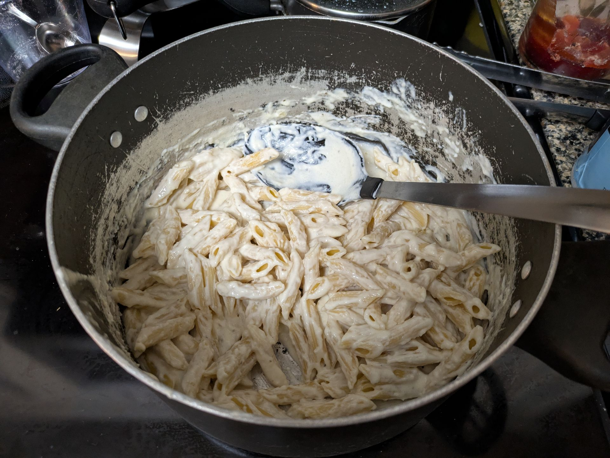

Garlic Parmesan Pasta
Home

Description
Delicious and simple to make, garlic parmesan pasta is a hearty meal.
Ingredients
- 16 oz dry fettucine pasta
- 2 tbsp butter
- 3 cloves of garlic
- 1 tbsp flour
- 2 cups heavy cream (aka heavy whipping cream)
- 1 cup grated Parmesan cheese
- 1 tsp salt (adjust according to taste)
- 1 tsp pepper black pepper (adjust according to taste)
Steps
- Boil water in a large pot and cook the pasta according to package directions until al dente.
- Melt butter in a skillet (or in the same pot) over medium heat and cook the garlic until fragrant or until it starts to turn color.
- Add the flour and mix continuously until slightly browned, about 30 seconds-1 minute.
- Slowly whisk in the heavy cream and cook, stirring occasionally until slightly thickened.
- Take the skillet off heat and add the Parmesan cheese. Add salt and pepper to taste and stir until fully mixed in.
- Add the pasta back to the skillet and mix with the sauce. Serve and enjoy!